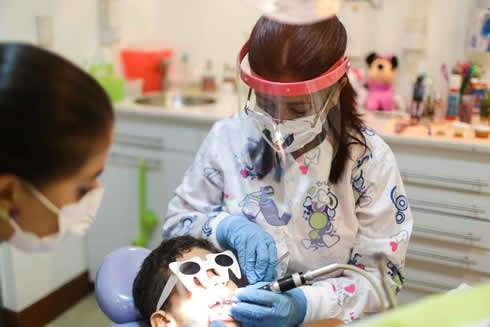
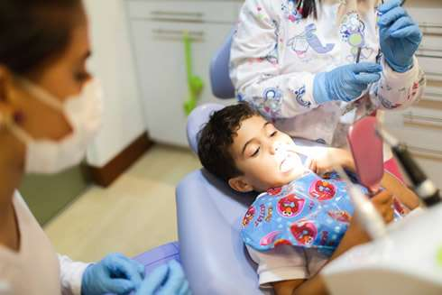
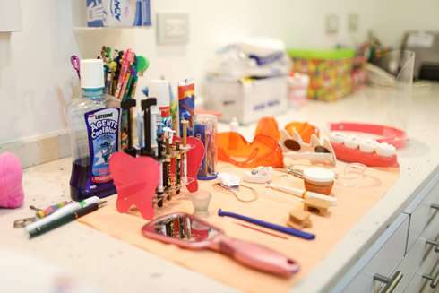
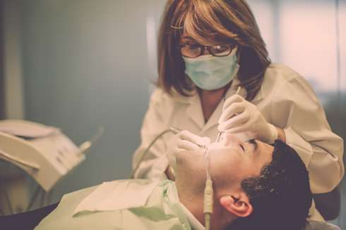
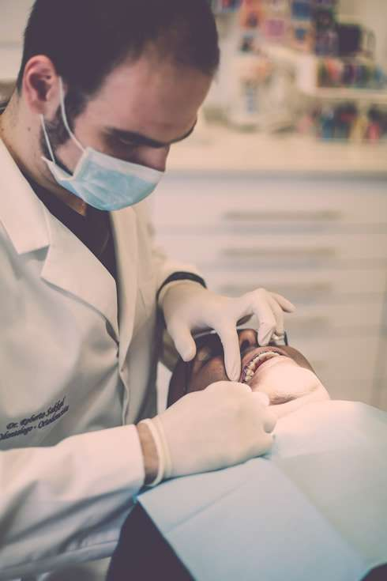

La atención en DENTIPLUS es personal, continua y completa.
En nuestros departamentos desarrollamos todas las especialidades odontológicas tales como:
 Odontopediatría Odontopediatría
Periodoncia
Ortodoncia
Cirugía
Endodoncia
Odontología Restauradora y Estética
Implantes Bucales
Asímismo contamos con el departamento de Radiología el cual tiene a su cargo la producción de imágenes radiográficas de la más alta calidad técnica
de los dientes y demás estructuras maxilo-faciales, así como de la interpretación diagnóstica de las mismas.
En DENTIPLUS encontrará siempre excelentes profesionales, somos un equipo sólido, que comparte experiencias y avanza en el conocimiento y aplicación de nuevos tratamientos.
ODONTOPEDIATRIA.-



Es la especialidad de la odontología orientada a la prevención y tratamiento de los problemas dentales y bucofaciales del niño desde su nacimiento hasta la adolescencia.
Nosotros nos enfocamos en prevenir caries dentales y enfermedades de las encías, así como también traumatismos dentales y mal posiciones dentarias con el uso de ortodoncia preventiva y ortopedia
maxilar aplicadas en edades tempranas.
Buscamos brindarle a su hijo una atención optima, de manera que la visita odontológica sea una experiencia agradable y motivante que le permita al paciente crecer con una idea positiva de la odontología,
para que así sea él quien cuide su propia salud bucal y nos recuerde como un profesional con sensibilidad, que busca su bienestar físico y emocional.
PERIODONCIA.-

Es la especialidad de la Odontología que estudia la prevención, diagnóstico y tratamiento de las enfermedades y condiciones que afectan los tejidos que dan soporte a los órganos dentarios
o a las estructuras que las sustituyen y el mantenimiento de la salud, función y estética de estas estructuras y tejidos. Las principales condiciones que trata son la periodontitis y gingivitis.
Hoy en día con el advenimiento de la implantologia la periodoncia también es la encargada de la prevención y tratamiento de las enfermedades periimplantares como la perimplantitis
Muchas
personas no se dan cuenta cuán común son las enfermedades periodontales (alrededor del diente) que comienzan lesionando las encías. Tres de cuatro adultos poseen algún tipo de esta
enfermedad. En la mayoría de los casos, no produce dolor y por consiguiente, dicho problema pasa desapercibido. Sin embargo, su temprana detección y tratamiento son extremadamente importantes,
debido a que la enfermedad periodontal termina con la vida del diente (movilidad, infección, extracción).
ORTODONCIA.-

La ortodoncia es la ciencia que permite mover dientes y maxilares a su posición correcta, desde el punto de vista estético y funcional. Tiene como principal objetivo la creación
de salud bucal, a través del control activo del crecimiento de la cara, especialmente de los maxilares, así como de la erupción y disposición de los dientes y, de forma muy especial,
de todas las funciones masticatorias y de deglución.
La Ortodoncia se divide en tres ramas dependiendo de la forma en que actúa:
1. Ortodoncia Preventiva con la que se previene la implantación de algún problema, como por ejemplo sería la colocación de un mantenedor
de espacio para prevenir que se cierre el espacio de un diente permanente cuando se pierde la pieza temporal que lo precede, prematuramente.
2. Ortodoncia Interceptiva como su nombre lo indica, se refiere a interceptar un problema ya establecido, como por ejemplo corregir una mordida cruzada en dentición
mixta (cuando están presentes a la misma vez dientes temporales y permanentes), o eliminar un hábito como succión del dedo pulgar ( chupar el dedo pulgar). Las edades en las cuales se implementan
tanto la ortodoncia preventiva como la interceptiva son generalmente temprana entre los 5 y 9 años, cuando todavía están presentes los dientes temporales o en la dentición mixta combinación
de dentición temporal y permanente.
3. Ortodoncia Correctiva es la que engloba todos los tratamientos de la dentición definitiva, generalmente se realiza con aparatología fija en ambos arcos
dentarios( brackets y arcos), es lo que el público general , denomina frenillos.
El tratamiento promedio de ortodoncia correctiva, dura alrededor de 2 años aproximadamente, pero cada problema
en particular, tiene un tratamiento que durará acorde a la severidad de la maloclusión, es decir puede ser más o menos de 2 años, según el caso especifico de cada paciente.
La ortodoncia se combina con otras especialidades en paciente adultos con requerimientos especiales de salud bucal, por ejemplo en casos de pacientes con múltiples dientes faltantes, se realiza la ortodoncia
y luego de culminada, se combina con un odontólogo restaurador o protesista, quién sustituye las piezas dentarias ausentes.
Aparatos Estéticos o de Cerámica:
Solemos colocar brackets cerámicos, es decir, blancos, porque mejoran la estética del paciente
adulto durante el tiempo del tratamiento, ya que simulan el color natural del diente. El paciente debe evitar alimentos con colorantes excesivos, para que no cambien de color los brackets, resultando en una
disminución del efecto estético. También debe ser cuidadoso de no ingerir alimentos muy duros, que puedan estropear los brackets (como masticar nueces,etc).
Ortodoncia Invisible:
Es una nueva técnica de ortodoncia, para corregir malposiciones dentarias, que utiliza un distinto número de férulas transparentes con pequeños movimientos dentarios recreados por una computadora, hasta obtener
la colocación dentaria adecuada. Está pensado para aquellos pacientes adultos en los que la estética esté muy comprometida para poder llevar brackets. El tiempo de tratamiento suele
ser muy parecido a la técnica convencional de ortodoncia, pero como ventaja importante además de la estética, es que facilita el correcto cepillado dentario. Tiene indicaciones muy específicas,
para problemas ortodóncicos muy discretos, que no involucren discrepancias esqueletales severas asociadas.
|